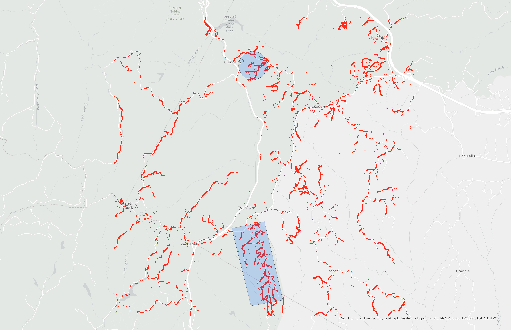

Cabins built between 2004 and 2023
Cabins on the Rise
A look at the development of Rental Cabins in the Red River Gorge.
Why the Red?
The Red River Gorge is a geological area in Eastern Kentucky that hosts a plethora of outdoor recreation and has seen a major boom in tourism over the last two decades. Many people want to marvel at the rock formations and enjoy the scenic views, but some seek to profit off of the increased traffic and subseuent rental cabin craze. Developers small and large are flocking to the Red to grab their slice of the pie, and we are going to look at the change this phenomenon has wrought.
This project is inteded to depict the proliferation of Cabins in the Red River Gorge over the last 20 years by studying lidar data and changes in land cover type. We will be able to see which areas have been developed the most and how they have changed.
Visualizations created from lidar data provided by KyFromAbove in ArcGIS Pro, Cesium Ion and Blender. Additional sources of information from USGS, April, 2024 KYTC, April 2024.
Page and visualizations created by Nick Gray for GEO 409, Department of Geography, University of Kentucky. Spring 2024.
Vizualizations

Map of Cliffview Resort Removal of Trees for Cabins
Map of the areas of interest within the larger area of the Red River Gorge. We looked at 2 of the areas with the highest amount of residential development within the Gorge.